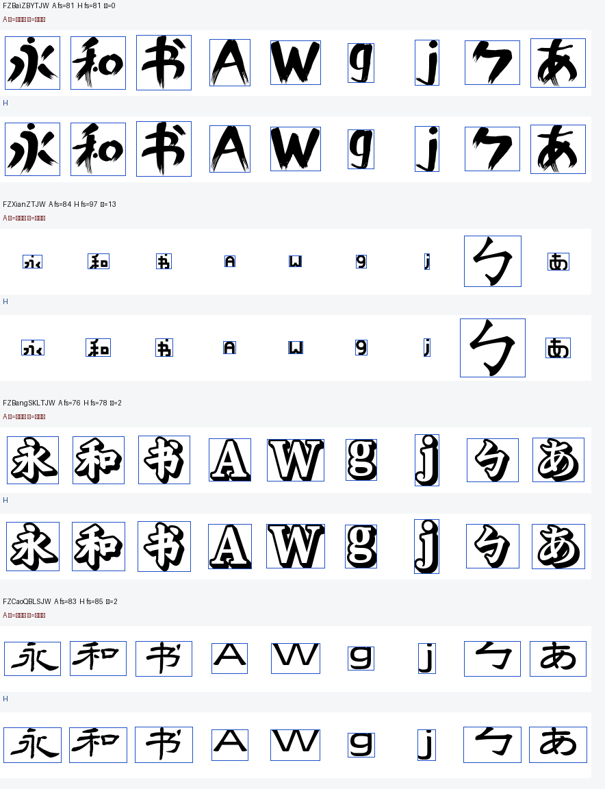
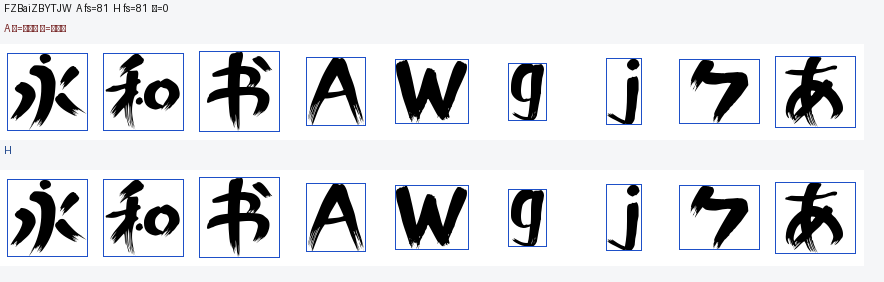
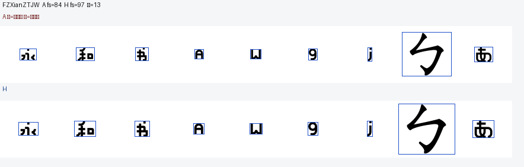
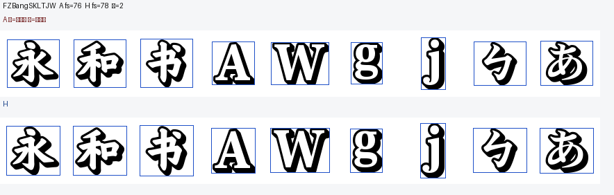
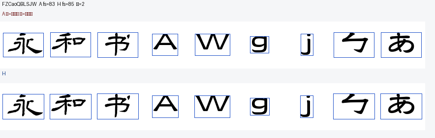

红框 = FreeType/Pillow textbbox（逻辑/轮廓度量框）· 蓝框 = 渲染后非白像素框
同一字体同一字号下，逻辑框通常 ≥ 墨迹框（含 bearing / 空白）。H 用墨迹进 84px 内框，所以字号可以 ≥ A。

A fs=81 · H fs=81

A fs=84 · H fs=97

A fs=76 · H fs=78

A fs=83 · H fs=85
